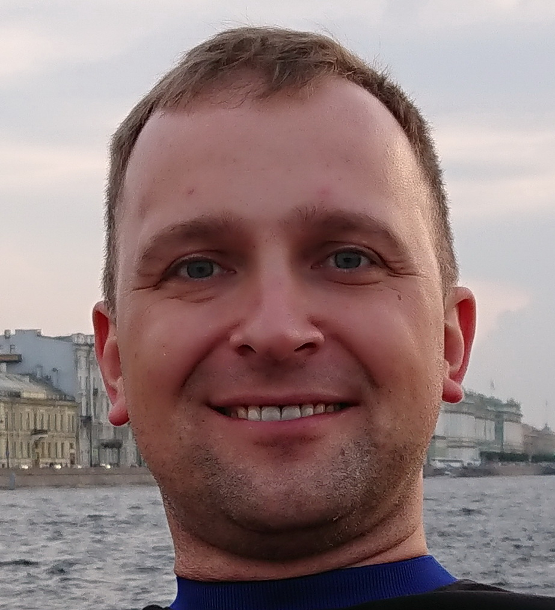

Sergii Myroshnychenko
Sergiimyr@gmail.com | +38(098)208-49-25 | Dnipro, UKRAINE
Frontend developer
Work Experience
- 2016-2018 Director, SIA Interfiber, Latvia, Riga.
- 2015-2016 Senior manager, Fibnet AB, Stockholm, Sweeden.
- 2014-2015 Private entrepreneur, Ukraine, Dnipro.
- 2007-2014 Sales manager. Private company, Ukraine, Crimea, Yalta.
- 2004-2007 Sales manager, Procter&Gamble company, Ukraine, Dnipro.
Education
- 1999-2003 National Mining University, Ukraine, Dnipro.
Skills
- Computer skills: Microsoft Office, Microsoft Office Visio.
- Programming skills: HTML5, CSS, JavaScript, Photoshop, MongoDB, NodeJS, React.
- Language skills: Ukrainian,Russian-native, English-Fluent, Spannish-Good reading and translating ability.
- Special skills: Driving License (Category B).
- Hobbies: Foreign languages, travelling, tennis, reading, design.
Personal qualities
- Dependable
- Determined
- Initiative
- Versatile